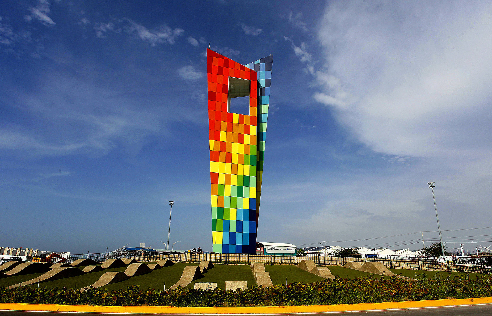
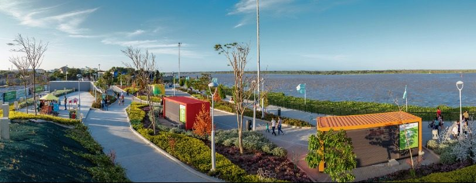
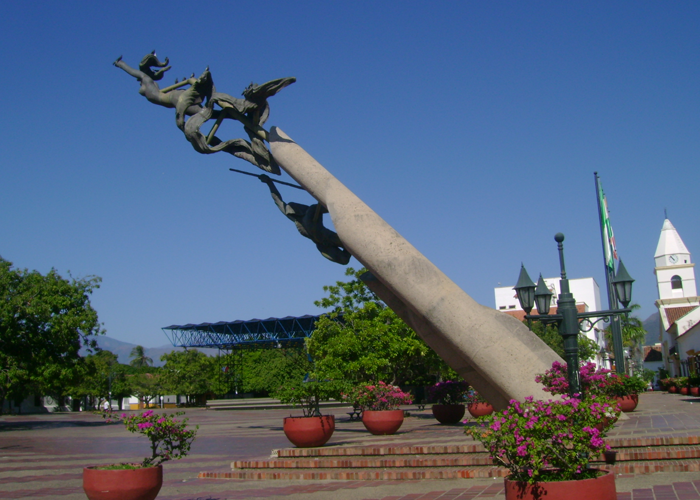
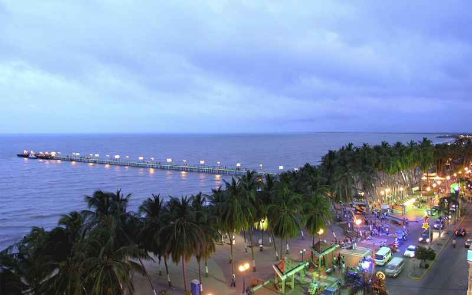
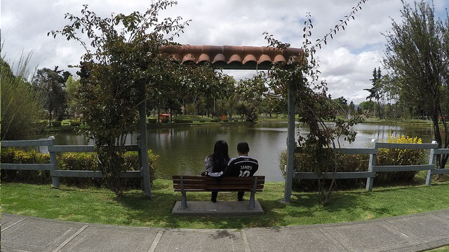
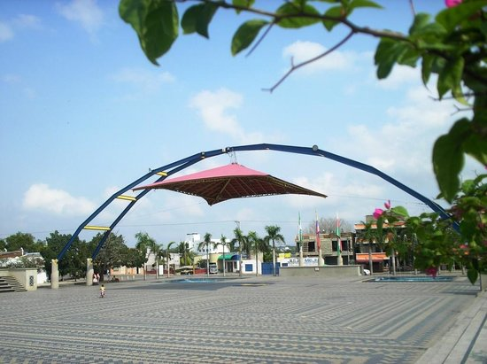
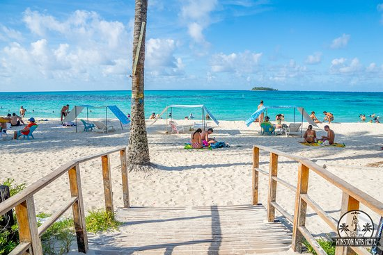

Region Caribe
En el norte de Colombia y bañada por el océano Atlántico está la región Caribe,
la cual, pese a que está dividida en siete departamentos, goza de una identidad cultural muy uniforme que está influenciada por el mar Caribe.
Departamentos De La Region Caribe
- Atlántico (Barranquilla).
- Bolívar (Cartagena).
- Cesar (Valledupar).
- Córdoba (Montería).
- La Guajira (Riohacha).
- Magdalena (Santa Marta).
- Sucre (Sincelejo).
- San Andrés y Providencia (San Andrés).

Sitios Turisticos Más Visitados De La Region Amazonica Por Cada Departamento
Atlántico (Barranquilla)

MONUMENTO LA VENTANA AL MUNDO
La Ventana al mundo es un monumento público ubicado en Barranquilla, Colombia.
Fue construido a finales de 2018 para coincidir con los XXIII Juegos Centroamericanos y del Caribe de los cuales la ciudad fue anfitriona.

GRAN MALECON DEL RIO
El Gran Malecón se desarrollo a lo largo de cinco kilómetros de la ribera occidental del río Magdalena
y cuenta con un malecón y una vía en doble calzada paralela al mismo y con conexión con la vía 40 en las calles 79, 72 y 58
se enlazo en la isla de La Loma y con el Centro de Eventos y Convenciones Puerta de Oro.
------------------------------------------------------------------------------------
Bolívar (Cartagena)

CASTILLO DE SAN FELIPE BARAJAS
El Castillo San Felipe de Barajas es una fortificación localizada en la ciudad de Cartagena de Indias en Colombia.
Su nombre real es Fuerte de San Felipe de Barajas. Está situado sobre un cerro llamado San Lázaro y fue construido en 1657 durante la época virreinal española
PLAZA DE LA ADUANA DE CARTAGENA
Es la plaza más antigua que tiene Cartagena de indias, esta constituida como la más señorial y elegante de la ciudad
aunque su nombre real es “plaza Rafael Núñez” en homenaje póstumo al 4 veces presidente de Colombia Rafael Núñez,
también obtuvo a lo largo de su historia diversos nombres que delatan su historia, entre ellos se cuentan el de plaza de la contaduría, plaza del mar, plaza colon y por el que aún se le conoce plaza de la aduana.
------------------------------------------------------------------------------------
Cesar (Valledupar)

PLAZA ALFONSO LOPEZ
La plaza ha sido sitio de celebración y peregrinación durante las celebraciones de la Semana Santa en Valledupar,
en especial la celebración del Ecce Homo.
RIO GUATAPURÍ
El río Guatapurí es un río del departamento del Cesar, en la Costa Atlántica de Colombia.
Nace en la laguna Curigua, en la Sierra Nevada de Santa Marta, a 4400 m s. n. m. y desemboca en la margen derecha del río Cesar, cerca de Valledupar.
------------------------------------------------------------------------------------
Córdoba (Montería)

PLAZA CULTURAL DEL SINÚ
La plaza cultural del Sinú es un lugar que hace parte de la extensión del parque la Ronda del Sinú
forma parte de la recuperación del Centro Histórico de Montería así como del plan de rehabilitación de la malla vial urbana.

PARROQUIA SAN JERONICO LA CATEDRAL DE MONTERIA
Es la catedral de Monteria. Muy bonita, arquitectura llamativa y de noche tiene luces de diferentes colores.
------------------------------------------------------------------------------------
La Guajira (Riohacha)

MALECON LA PLAYA
Es un lugar bonito y clave para ver el atardecer en esta ciudad.

PLAYAS DE MAYAPO
La playa es muy destacada por tener fuertes vientos, por eso los visitantes
la escogen para realizar deportes náuticos como el kitesurf, windsurf y navegar en lanchas o pequeños veleros.
------------------------------------------------------------------------------------
Magdalena (Santa Marta)

PARQUE DE LOS NOVIOS
El parque de Los Novios o parque Santander es un espacio público situado en el centro histórico de Santa Marta
en el departamento colombiano de Magdalena. Alberga varios edificios de valor patrimonial y es uno de los centros gastronómicos y turísticos de la ciudad.

PARQUE TAYRONA
Es una gran zona protegida que abarca las laderas de la Sierra Nevada de Santa Marta
en las zonas adyacentes a la costa del Caribe. Es conocida por sus caletas cubiertas por palmeras, lagunas costeras, selva tropical y una abundante biodiversidad.
------------------------------------------------------------------------------------
Sucre (Sincelejo)

PLAZA CULTURAL MAJAGUAL
Plaza urbana extensa con enladrillado decorativo, esculturas iluminadas y festivales de música frecuentes.
CATEDRAL SAN FRANCISCO DE ASÍS
La Catedral San Francisco de Asís, de Sincelejo, es el nombre que recibe una iglesia catedralicia
que pertenece a la Iglesia católica y esta consagrada a San Francisco de Asís.
------------------------------------------------------------------------------------
San Andrés y Providencia (San Andrés)

PLAYA SPRATT BIGHT
Esta playa amplia tiene aguas cálidas y poco profundas en las que los visitantes pueden caminar o nadar.
JARDIN BOTANICO SAN ANDRES
En un marco de vegetación natural se despliega está colección botánica por senderos
que impactan hasta el asombro desde helechos, orquídeas, azucenas gigantes, hasta hierbas aromáticas, florales, suculentas, arbustos, frutales y árboles
que sorprende por los usos múltiples que los pueblos indígenas y campesinos vienen utilizando desde tiempos remotos.